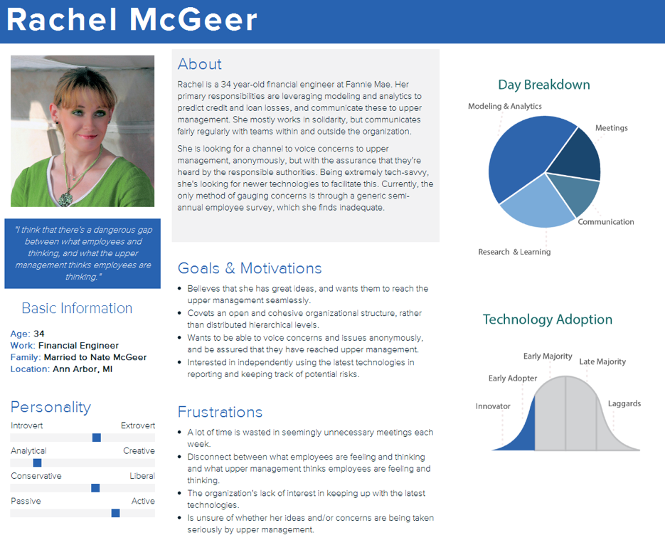
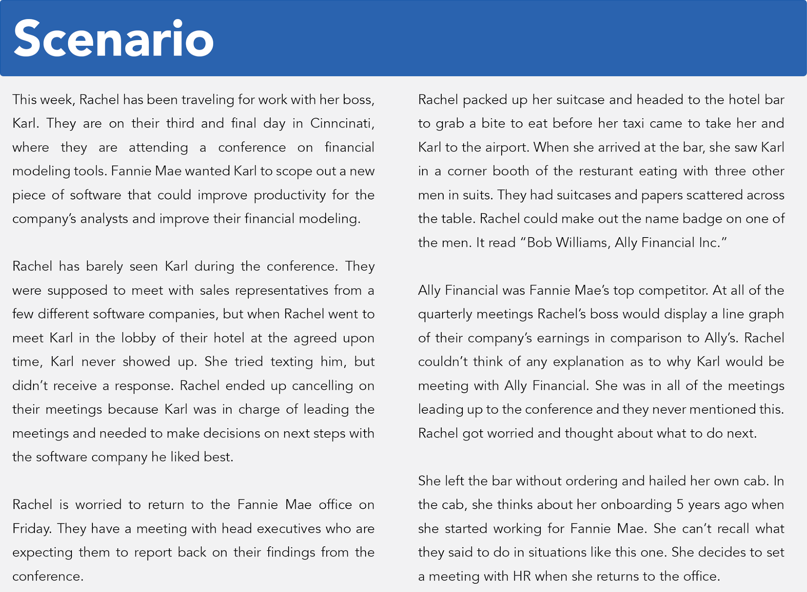

To comply with my non-disclosure agreement since Squibit goes live soon, I have omitted confidential information from this piece, including an interaction map, findings from comparative analysis, heuristic evaluation and usability testing.
Squibit! is essentially neighborhood watch manifested into a web and mobile application designed for mid to large-sized companies, non-profits and/or institutions. It uses an approach where workplace communication works with your existing processes to help prevent security breaches, mitigate safety hazards and maintain organizational integrity. Using this application, users can anonymously submit an incident report that detail the various facets of a safety, security or ethics concern to the appointed administration for their organization. Once a report has been submitted, users may update an existing report and/or receive feedback from the administration.
What did the client want?
We kicked off our process by meeting with the founders of Squibit, Andrew and Scott to understand the high-level functionality of the application as well as delve into the finer nuances of usage. After getting clarity on purpose, design, implementation, and usage, we trimmed down our responsibilities to a three-fold approach.
Uncover insights related to the challenges and opportunities for Squibit to be implemented in workplaces.
Identify usability issues in the current interface of the application.
Outline a list of considerations that can be used to inform marketing and implementation strategies.
What did potential users think?
We conducted interviews with a selection of target users of the application in order to elicit contextual information related to the workplace environment of each user and their perceived value of Squibit, if implemented.
We targeted low to mid-level employees at companies with 200 or more workers, specifically within Healthcare, Finance, Information Technology and/or Education industries. Leveraging all our professional networks and beyond, we identified a stratified sample of 5 participants with details outlined below:
- Male, Data Analyst (IT)
- Male, Teaching Assistant (Education)
- Male, Financial Engineer (Finance)
- Female, Researcher (Healthcare)
- Female, Doctoral Candidate, Psychology & Women's Studies (Education)
The interviews followed a semi-structured format with a guide encompassing questions related to the nature of job role, technical background, knowledge of workplace policies, perception of upper management, and touching upon the overall culture of existing mechanisms for reporting concerns. Each interview was conducted by two team members, an interviewer and a note-taker. Consequently, we collectively analyzed all the notes and recordings to derive key insights and patterns to inform the creation of personas and scenarios.
Creating Personas & Scenarios
We used the findings from the interviews to strategically create 3 distinct personas and scenarios. Each of the three scenarios directly relates to a key finding from the interviews and a unique characteristic of the persona. We wanted to be sure the scenarios placed each persona in a situation where they could potentially use a system like Squibit to report a problem they faced in the workplace. We made sure each employee's situation also addressed different hesitancies users may face when they consider reporting a problem.
Here is a sample persona and corresponding scenario that we created. Rachel's scenario shows that many employees at large companies will forget the protocol for reporting issues. They may have been working at the company for a long time and therefore have not been told the process in a long time. It also shows the complex situation employees will be in when dealing with their superiors or managers who are potentially breaking company policies.
 Analyzing the competitors
We conducted an analysis of comparable products, services and protocols in order to survey the competitive market for functional “blind spots” and other opportunities for Squibit’s development to benefit from the unique features of its competitors. As a secondary goal, we aimed to use the comparative analysis as an opportunity to identify those workplace mechanisms that are competing with Squibit versus those mechanisms that complement Squibit’s functionality (or vice versa).
We picked 11 competitors that differed in platform, report specialization, report categorization, registration methods and user-input. We also more informal competitors that are not an established product or service but rather common generic mechanisms for reporting issues in the workplace. The competitors were broadly categorized as follows:
- Direct - Offer the same functions in a similar manner to Squibit
- Indirect - Offer the same functions but in a different manner to Squibit
- Partial - Offer some but not all functions that Squibit offers
- Analogous - Non-competitors that provide ideas about improving Squibit
- Complementary - Offer different functions that complement Squbit
Two priorities drove our selection of competitors. Firstly, given the perceived scarcity of direct competitors, we wanted to give careful consideration of indirect competitors that perform similar functions to Squibit but in a slightly different manner. Second, given the diverse composition of competitors across different platforms and industries, we aimed to select a representative sample of platforms and all other competitor types to ensure a comprehensive overview of comparable products, services and protocols.
Some of our key findings in this phase were:
Some competitors had an advantage with a wide variety of categories for incident reporting, particularly in cases where the distinction between security, safety, and ethics gets foggy.
Some competitors allowed for a highly customized incident report along the lines of an anonymous conversation with active feedback from the organization, rather than a one-time submission.
Most competitors had some form of human assistance if needed.
Survey
In this phase, we designed and distributed a survey to the widest possible net of employees with the aim of being as inclusive as possible and gaining a wider spectrum of perspectives. We selected Qualtrics as our hosting platform and based the survey on 4 broad research questions that were an outcome from the interviews, personas, and scenarios.
- What can employees describe and recall about communicating and reporting workplace concerns?
- Are employees satisfied with their company’s process for reporting workplace concerns?
- What technologies are currently in use for communicating in the workplace?
- What workplace entities are responsible for handling the various stages of responding to, dealing with and following up on a workplace concern?
We had a total of 88 respondents, with a synopsis of the demographics as follows:
Some of our most telling findings were:
85%of respondents were aware that their company has a procedure for dealing with workplace incidents
A staggering 82% of employees reported that upper management and security were the first point of contact for reporting workplace incidents
The majority 90% of respondents report security incidents either in person or by phone and email, with some level of human contact
Heuristic Evaluation
We decided to focus on the mobile version of Squibit for the purpose of heuristic evaluation. Squibit is a fairly simple application with a limited number of screens and interactions. Hence, we decided to perform a detailed analysis of the two major tasks that a user can perform, submitting an incident report and updating a previously submitted report.
We leveraged the heuristics proposed by Nielson (1994) to identify the weaknesses in Squibit’s current interface that contribute to a poor user-experience:
- Visibility of system status
- Match between system and the real world
- User control and freedom
- Consistency and standards
- Recognition rather than recall
- Flexibility and efficiency of use
- Aesthetic and minimalist design
- Help users recognize, diagnose, and recover from errors
- Help and documentation
A severity rating was assigned to each weakness based off of the following scale:
- 0: Not a usability problem
- 1: Cosmetic problem only
- 2: Minor usability problem
- 3: Major usability problem
- 4: Usability catastrophe
After individual evaluation, we assembled as a group to analyze the findings. Some results were aggregated in order to avoid redundancy. Also, we discussed the severity rating assigned by each member and adjusted some of these ratings based on a unanimous decision. This ensured that the findings were the result of a holistic and unbiased representation of the heuristic evaluation.
Usability Testing
The overarching goal of user testing was to evaluate the usability, functionality, and aesthetics of Squibit! by real users. The test was outlined to answer the following questions:
- What are the obstacles in the system that prevented the users from completing common tasks?
- Are the users able to effectively leverage the additional functionalities offered by Squibit?
- Does the layout of the application speed up or slow down the user?
- Are there any features of the application that the users find particularly appealing or demanding?
- What are the recurring findings from previous phases that can be validated or challenged by usability testing?
We conducted usability tests with 5 users working in diverse fields and industries with varying level of work experience in order to sample a variety of data. During each session, the participant attempted to complete 4 tasks related to submitting and updating an incident report. Each successive task introduced a new workplace situation and a new application feature for increasing complexity.
Each session consisted of several forms of data collection:
- A pre-test questionnaire to get a better understanding of their background
- A post-test questionnaire to gauge their experience with using the application
- Session logs & time recordings for each task
- Qualitative observations such as facial expressions and body language
- Video & audio recordings of each session using Camtasia 2 for Mac
The usability tests revealed a variety of technical, functional, and UI issues associated with the mobile version of the application.
Impact
Our recommendations were leveraged to influence various facets of the application as it moved from BETA to MVP. Here is some feedback from our clients:
A quick note to all on your work over this semester...great job! It has been informative and immediately impactful. Also, much appreciated. Bravo!